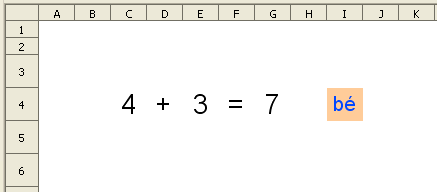
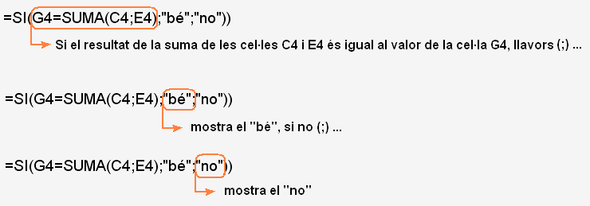
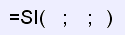
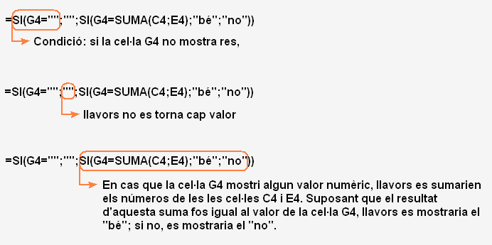

Presentació gràfica de l'activitat

Funcions que es fan servir en aquesta activitat
Objectiu de l'activitat
Havent fet la pràctica 1, ara es tracta de fer una pràctica semblant però amb avaluació fent així del calc una eina interactiva per practicar diferents tipus d'operacions que s'aniran veient durant aquest curs telemàtic.
Desenvolupament de l'activitat
1. Obrir e fitxer M1 i canviar el nom de Full2 pel de M1P2 suma amb avaluació
2. Escriure a la cel·la C4 un número d'un dígit (qualsevol número del 0 al 9).
3. Escriure a la cel·la D4 el signe + .
4. Escriure a la cel·la E4 un número d'un dígit.
5. Escriure a la cel·la F4 el signe =.
6. Escriure a la cel·la G4 el resultat de la suma.
7. Formatar la cel·laG4 amb els següents atributs:
8. Escriure a la cel·la I4 el següent: =SI(G4=SUMA(C4;E4);“bé”;“no”))
En cas que no s'escrigui cap número a la cel·la G4, la cel·la avaluadora I4 mostra “no”. Per evitar-ho, llegir l'exemple 4 dels exemples amb la funció =SI()
9. Formatar la cel·la
I4 amb els següents atributs:
10. Fer un alineament centrat de tex horitzontal i vertical de les cel·les del rang C4:I4
11. La cel·la a protegir serà la I4
12. Comprovar que la pràctica funcioni correctament.
13. Desar el fitxer M1.
La fórmula =SI(G4=SUMA(C4;E4);“bé”;“no”)) expressa el següent: Si el resultat de le suma de les cel·les C4 i E4 és igual al valor de la cel·la G4, llavors es mostra el "bé" avaluador; si no, mostra el "no" avaluador.


En la funció SI, el que hi ha entre el primer parèntesi i el primer punt i coma (;) és la condició que es proposa. En cas que aquesta condició es compleixi, llavors es mostra (torna) el que s'escriu entre els dos punts i coma; si no, es mostra el que s'escriu després del segon punt i coma.
Els punts i coma que hi ha a les funcions serveixen per separar els arguments. Aquests arguments són valors que es fan servir per realitzar les operacions que hi ha a la fórmula. Els parèntesi serveixen per tancar els arguments.
Quan una funció es fa servir com argument d'una altra funció, llavors es presenta una funció anidada. Observar les anidacions en els exemples 2 i 4 que hi ha a continuació.
Exemples amb la funció =SI()
Exemple 1 d'una fórmula escrita a la cel·la
H4:
=SI(G4=2;“aquest és el número dos";"aquest no és el número dos”)
Aquesta fórmula significa el següent:
Si la cel·la
G4 és igual a
2, llavors (
;) mostra el text “aquest és el número dos”, i si la condició no es verdadera (suposem que el valor de G4 sigui igual a 4) llavors(
;) mostra el text de “aquest no és el número dos”.
Exemple 2 d'una la fórmula escrita a la cel·la
H5:
=SI(G5=SUMA(C5;E5);“bé”;“no”)
Aquesta fórmula significa el següent:
Si la cel·la
G5 és igual a la suma de
C5 i
E5, llavors (
;) mostra el text de
“bé”, i si la condició no es verdadera (que el valor de la suma de
C5 i
E5 no sigui igual al valor que s'escriu a la
G5) llavors (
;) mostra el text de
“no”.
Exemple 3 d'una fórmula escrita a la cel·la
H6:
=SI(G6=“”;“”;“en aquesta cel·la hi ha quelcom escrit”)
Aquesta fórmula significa el següent:
Si la cel·la
G6 és un conjunt buit (no hi ha res escrit), llavors (
;) no mostris res, i si la condició no es verdadera (que la cel·la G6 té algun tipus de dades) llavors(
;) mostra el text de “en aquesta cel·la hi ha quelcom escrit”.
Exemple 4 d'una fórmula escrita a la cel·la I4: =SI(G4=“”;“”;SI(G4=SUMA(C4;E4);“bé”;“no”))
Aquesta fórmula significa el següent:

La fórmula de l'exemple quatre es podria escriure a la cel·la I4 d'aquesta pràctica. D'aquesta manera la cel·la I4 no mostraria cap valor en cas que la cel·la G4 no mostrés cap valor.